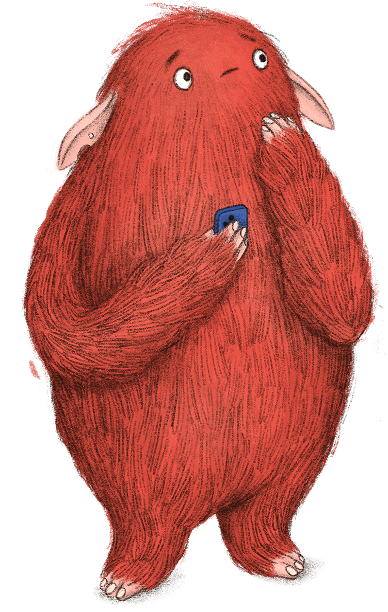

Red / Design catalogue
Brand foundations
Warm, simple and made around family life.
Cream is the default canvas. Ink is for copy. Red creates emphasis. Headings and body use Vesper Libre.
The original mascot is expressive, tactile and human. One composition per page is enough.

What the source establishes
Logo variants, the primary palette, Vesper Libre regular and bold, and permission requirements for illustration. The PDF does not define a full web component library.
What this system adds
Responsive grids, type sizes, accessible interaction patterns and examples. These are documented implementation defaults, ready for brand review.